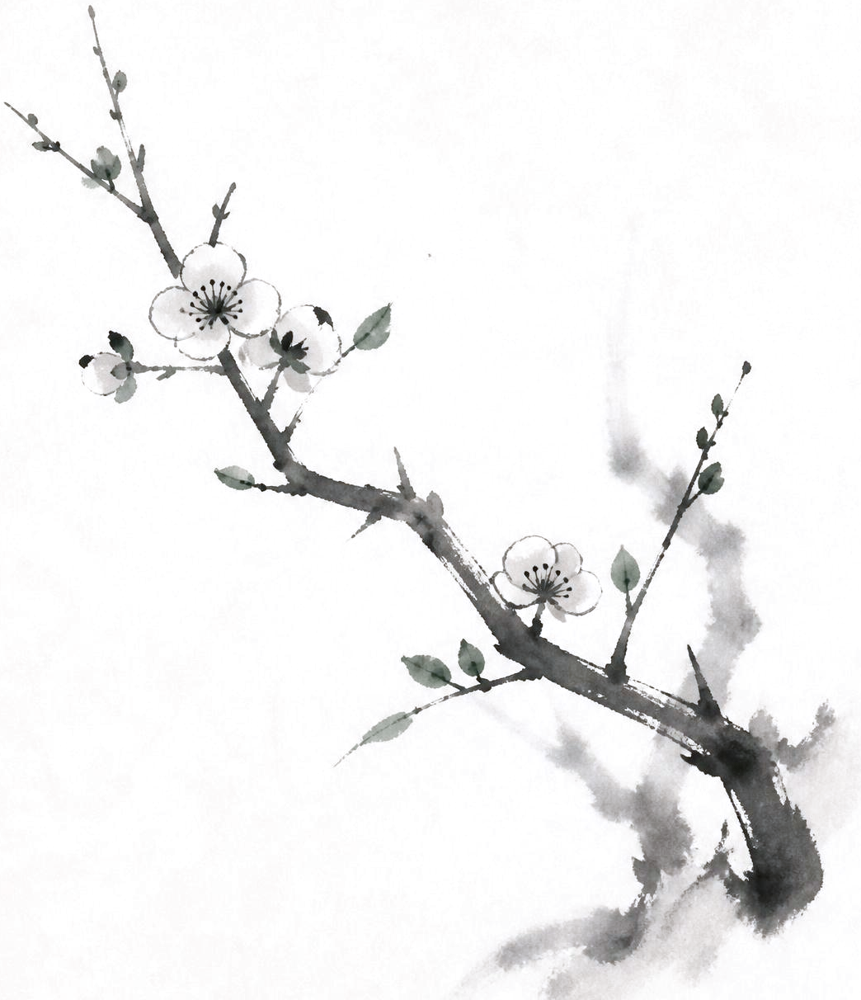

Pelajaran
Belajar pelan-pelan, dari awal, tanpa dikejar.
Kami mulai dari delapan topik dasar yang bisa diikuti siapa saja — gratis, daring, dan tanpa keharusan melanjutkan.
Kelas Intro
Delapan sesi pengantar tentang dasar-dasar ajaran Buddha, dibawakan langsung oleh guru resmi kami lewat Zoom. Interaktif — Anda boleh bertanya kapan saja.
- Biaya
- Gratis
- Jumlah topik
- 8 sesi
- Format
- Daring (Zoom)
- Bahasa
- Bahasa Indonesia
Siapa yang boleh ikut?
Siapa saja. Anda tidak perlu beragama Buddha, tidak perlu punya latar belakang keagamaan apa pun, dan tidak perlu tahu apa-apa sebelumnya.
Banyak peserta datang hanya karena penasaran — dan itu sudah cukup.
Setelah kelas intro?
Tidak ada kewajiban apa pun. Jika Anda ingin melanjutkan, ada program siswa resmi. Jika tidak, tidak masalah sama sekali.
Kurikulum
Delapan topik dasar
Setiap sesi berdiri sendiri, tapi disusun berurutan agar pemahaman terbangun pelan-pelan.
Mengapa kita menderita?
Titik awal seluruh ajaran Buddha — melihat penderitaan dengan jujur, tanpa menghakimi diri.
Hukum sebab dan akibat
Apa sebenarnya karma, dan mengapa ia bukan soal nasib buruk atau kutukan.
Segala sesuatu berubah
Ketidakkekalan, dan mengapa memahaminya justru menenangkan.
Apa itu kebahagiaan sejati?
Perbedaan antara kebahagiaan yang bergantung pada keadaan dan yang tidak.
Melihat diri sendiri apa adanya
Bagian yang paling jujur — dan paling melegakan — dari ajaran ini.
Ajaran Guru Shinran
Siapa Shinran, dan mengapa ajarannya terasa dekat dengan orang biasa.
Mendengarkan Dharma
Mengapa dalam Jodo Shinshu, mendengarkan adalah praktik utamanya.
Melanjutkan perjalanan
Rangkuman, dan gambaran apa yang bisa dipelajari selanjutnya.
Langkah Berikutnya
Menjadi siswa resmi
Bagi yang ingin mempelajari ajaran ini lebih dalam dan berkelanjutan.
Setelah kelas intro, Anda bisa memilih untuk menjadi siswa resmi Dharma Academy ID. Program ini melanjutkan pembelajaran hingga 40 topik, dengan akses ke sesi kelompok, sesi pengulangan, ceramah dari sensei di Jepang, materi belajar, dan perpustakaan digital anggota.
Menjadi siswa juga berarti ikut menanggung agar orang lain bisa bertemu Dharma — semangat jiri rita yang menjadi dasar kami.
Tentang kontribusi bulanan
Siswa resmi memberikan kontribusi bulanan untuk mendukung kelangsungan pengajaran.
Penting untuk diketahui: kontribusi ini disalurkan ke Shinrankai, pusat kami di Toyama, Jepang — bukan untuk guru lokal di Indonesia. Dana tersebut digunakan untuk mendukung penyebaran ajaran dan pemeliharaan kuil pusat.
- Jumlah kontribusi
- [Akan dilengkapi — jumlah dalam Rupiah]
- Cara pembayaran
- [Akan dilengkapi — detail transfer bank]
Siap mengikuti kelas intro?
Hubungi kami untuk bergabung di angkatan berikutnya — gratis, tanpa keharusan melanjutkan.
Hubungi Kami